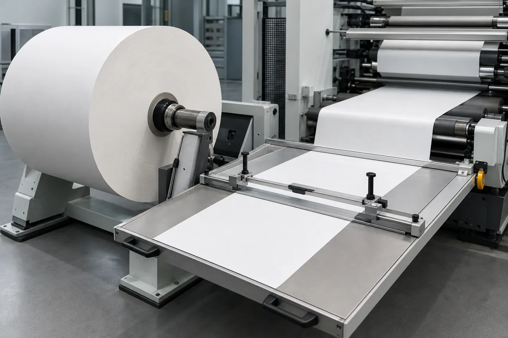

Published July 13, 2026 | By HDPTH Technical Editorial Team
Short answer: What is a Slitter Rewinder Splice Table?
A slitter rewinder splice table is an engineered web splicing station typically positioned between the unwind stand and the slitting section of a roll-converting machine. Its primary mechanical function is to provide a flat, stable surface where operators can join the expiring web of a depleted parent roll to the leading edge of a new parent roll. When equipped with web clamping bars and a transverse cutting guide, an unwind splice table can assist operators in achieving cleaner cuts and more consistent tape alignment, which can help reduce the likelihood of web breaks and alignment defects downstream.
When is a manual or assisted splice table sufficient? For converting lines where parent roll changeover frequency is relatively moderate—such as lines running larger diameter rolls or heavier-gauge materials—a manual splice table or a pneumatic assisted vacuum splice table often provides a reliable and cost-effective solution. These stations allow operators to execute controlled splices during planned machine stoppages without the need for complex automation.
When should buyers evaluate automatic splicing or non-stop unwind upgrades? When operating high-speed slitting lines with short-yardage parent rolls, delicate lightweight films, or continuous workflows where frequent stoppage can significantly impact production efficiency, plant managers should evaluate whether an automatic non-stop unwinding slitter rewinder upgrade is appropriate. Whether an automatic splicer should be specified is a core project configuration question that depends on target line speed, web material characteristics, and overall investment requirements discussed during the initial RFQ stage.

Manual splice table vs automatic splicer: configuration matrix
To assist plant engineers and procurement managers in comparing different splicing architectures, the following matrix outlines general operational differences across the three primary system configurations. Actual performance is application-dependent and should be verified for each project.
| Engineering Parameter | Manual Splice Table | Assisted / Vacuum Splice Table | Automatic Splicer / Non-Stop Unwind |
|---|---|---|---|
| Operational Web State | Complete line stoppage (Zero speed) | Complete line stoppage (Zero speed) | Continuous production speed or controlled transfer speed |
| Relative Changeover Time | Moderate (Dependent on operator procedure) | Short to moderate (Assisted clamping & hold-down) | Minimal line downtime (Automated sequence) |
| Web Clamping Mechanism | Manual clamps or basic pneumatic bars | Pneumatic clamping bars with optional vacuum suction | Automated nip roller mechanism and cutting assembly |
| Splice Consistency | Reliant on operator alignment and manual cutting | Enhanced consistency; vacuum helps reduce wrinkles | Engineered repeatability; automated tail length control |
| Typical Application Fit | Stable films, rigid papers, heavier nonwovens, long roll runs | Lightweight films, extensible textiles, curl-prone substrates | High-speed lines, short-yardage rolls, continuous workflows |
| System Complexity & Cost | Low complexity; economical initial investment | Moderate complexity; requires compressed air/vacuum supply | Higher complexity; higher capital investment; specialized controls |
Engineering and process considerations
Selecting an unwind splice table configuration involves reviewing the web material characteristics, production line dynamics, operator workflow, and applicable safety standards. Procurement managers should consider the following four operational factors during machine specification.
1. Material Characteristics: Nonwovens, Papers, Films, and Laminates
Different web materials behave differently under tension and when clamped stationary. As a builder of custom converting equipment, HDPTH discusses material behavior with buyers to help determine appropriate splicing configurations:
- Nonwoven Fabrics: Porous and flexible textiles such as spunbond or meltblown nonwovens may not respond effectively to standard vacuum hold-down if air bleeds easily through the fiber network. For these substrates, wider mechanical or pneumatic clamps that distribute pressure across the web without crushing delicate loft are often evaluated when configuring nonwoven rewinding machines.
- Paper and Board: Paper substrates can be prone to edge curling, especially under varying environmental humidity. An assisted splice table with effective clamping bars can help hold curled edges flat against the cutting guide, facilitating a smoother cut.
- Flexible Films and Laminates: Thin polymeric films (such as PE, BOPP, or PET) may exhibit static cling, wrinkling, or slippage. For these materials, a vacuum splice table can help hold the web flat and stable, which aids operators in applying splicing tape smoothly across the width without introducing localized distortion.
2. Parent Roll Changeover Frequency and Line Downtime
The choice between manual, assisted, and automatic splicing is often influenced by how frequently parent rolls need to be changed. This depends on line speed, material thickness, and parent roll outer diameter.
For example, if a converting line processes large-diameter parent rolls of thick material where a roll changeover occurs relatively infrequently, the cumulative downtime from manual splices may be minimal. In such cases, a manual or vacuum-assisted splice table represents a practical, budget-conscious option. Conversely, if a machine runs thin films at high speeds from shorter-yardage parent rolls, changeovers may occur much more frequently. In those workflows, the cumulative stoppage time required for manual splicing can impact overall plant efficiency, making it worthwhile to evaluate whether an automatic splicing system is economically justifiable.
3. Operator Workflow, Clamping Controls, and Cutting Aids
A functional web splicing station should be designed to facilitate an efficient and organized operator workflow. General mechanical and structural considerations to discuss during a project review include:
- Accessibility and Layout: The splice table should be located and mounted in a way that allows operators to reach clamping controls and cutting guides without unnecessary physical strain. Clear front access helps operators position tape and inspect the web joint comfortably.
- Cutting Guidance: Freehand trimming with utility knives can lead to uneven edges and potential safety risks. Utilizing an integrated transverse cutting slot or a captive safety knife mechanism allows operators to guide their cutting tool along a defined path, which helps achieve a straighter seam while keeping the blade controlled.
- Clamping Control Sequencing: Where pneumatic clamps are specified, independent upstream and downstream controls can be beneficial. This allows an operator to secure the expiring web first, prepare the trailing edge, and then position and clamp the leading edge of the new roll independently before applying tape.
4. Machine Guarding and Safety Standards (OSHA 29 CFR 1910.212 & LOTO)
Machine guarding and operator safety are vital considerations for B2B machinery buyers globally. Unwind splice tables are frequently located near rotating parent rolls, unwind shafts, and potential pinch points.
When evaluating splicing station designs, buyers should review general safety frameworks such as OSHA 29 CFR 1910.212 (General requirements for all machines), which mandates that machine guarding must be provided to protect operators from hazards such as point of operation, ingoing nip points, and rotating parts. Depending on the mechanical design and clamping forces involved, appropriate safeguarding methods—such as physical barrier guards, interlocked shields, or presence-sensing devices—may need to be evaluated to protect operators during the splicing sequence.
Additionally, regulatory guidance such as OSHA lockout/tagout (LOTO) standards distinguishes between normal production machine guarding and energy isolation requirements during servicing and maintenance. Certain minor, routine operational tasks performed during normal production may be governed by specific exception criteria provided alternative, effective safeguarding is in place. Because safety compliance is site-specific and depends on regional regulations, buyers should review all machine guarding, LOTO procedures, and local safety requirements with qualified safety specialists during the equipment specification phase.
RFQ data for an unwind splice table
To help ensure that a proposed roll-converting line includes a splicing configuration suitable for your plant, your Request for Quotation (RFQ) should clearly define your production parameters. Because HDPTH confirms project configurations from customer requirements, providing thorough application details enables our engineering team to prepare a more accurate technical evaluation.
Core Technical Parameters for Your Inquiry
When preparing an RFQ for a custom slitter rewinder or roll-converting machine, buyers should include the following technical details:
- Material Classification and Thickness Range: Identify all web materials to be processed (e.g., nonwoven, paper, film, foil laminates) along with their minimum and maximum basis weights (GSM) or thickness (microns/mils).
- Parent Roll and Finished Roll Specifications: Provide the maximum parent roll width, minimum slit width, maximum parent roll outer diameter (OD), and core internal diameters (such as 3-inch or 6-inch air shafts).
- Operating Line Speeds: Specify the target continuous production speed (m/min) as well as typical threading or setup speeds.
- Web Tension Requirements: Indicate the expected tension range across the unwind section so that table structures and clamping assemblies can be evaluated for appropriate rigidity.
- Splicing Method and Tape Preferences: Note whether your process utilizes butt splices or lap splices, and share general specifications regarding the width and type of splicing tape typically used in your facility.
Discussing Line Layout and Auxiliary Equipment with HDPTH
An unwind splice table functions as part of a coordinated web path. During technical discussions with HDPTH, buyers may also wish to explore related machine systems:
- Web Guiding Coordination: Discuss whether web guiding sensors should be positioned upstream or downstream of the splicing station. Proper alignment control helps ensure that the spliced web enters a high-speed slitting machine accurately, which can reduce edge trim waste.
- Tension Control During Stoppage: Review how the unwind tension control system behaves during a manual splice. When the web is clamped stationary, tension controls or unwind brakes may need to enter a controlled state to prevent undesirable tension spikes or web slack.
- Auxiliary Splicing Accessories: Evaluate whether additional accessories—such as overhead inspection lights, static control devices for polymeric films, or waste trim collection provisions—should be incorporated into the station layout to support your operators.
FAT, shipment inspection and installation preparation
Procuring custom industrial machinery requires a structured approach to quality validation. Before equipment is dispatched from the manufacturing facility, executing a structured evaluation helps verify that the splicing station and overall machine perform as intended under simulated operating conditions.
FAT Verification Protocols for Splice Tables
The Factory Acceptance Test (FAT) provides an opportunity for buyers to review machine assembly, functionality, and basic controls before shipment. When conducting a slitter rewinder Factory Acceptance Test, your inspection team can include several practical checks for the web splicing station:
- Table Alignment and Flatness: Inspect the splice table surface to check that it is level, stable, and correctly aligned with the surrounding idler rollers and primary web path.
- Clamping Bar Functionality: Test the mechanical or pneumatic clamping bars across sample web materials to verify that they engage smoothly and hold the web securely without causing excessive creasing or material damage.
- Cutting Guide Assessment: Perform sample trial cuts through the guide slot using specified cutting tools to confirm that the slot allows for a clean, straight transverse cut across the web width.
- Vacuum System Verification: Where a vacuum splice table is specified, test the hold-down function using your sample substrates to verify that the vacuum effectively stabilizes the web during the taping process.
- Safety and Interlock Checks: Verify that all specified safety devices associated with the splicing section—such as emergency stop buttons, interlocked shields, or control switches—function in accordance with the agreed electrical and safety schematics.
Pre-Shipment Packaging and Site Preparation
Following successful FAT completion, appropriate protective packaging is necessary to help preserve machinery during international maritime or freight transit. HDPTH utilizes protective wrapping, anti-corrosion treatments where appropriate, and secure export crating to help protect machined surfaces and mechanical assemblies from transit moisture and vibration.
In preparation for machine arrival, facility managers should ensure that required plant utilities are available at the installation site. For pneumatic splice tables, clean and regulated compressed air lines should be routed to the unwind location. If a vacuum hold-down system is included, electrical power connections should be planned according to the specified blower or vacuum generator requirements. Proper leveling and alignment of the unwind stand and splice table during site installation are essential steps to help ensure stable web tracking and reliable machine operation.
Preparing a slitter rewinder RFQ?
Share your material, parent roll size, changeover method, splice quality requirements and target output. HDPTH can review the project configuration before layout details are fixed.
Request a Technical Consultation & RFQFrequently asked questions
What is the primary function of a slitter rewinder splice table?
A slitter rewinder splice table provides a flat, stable surface between the unwind stand and the slitting section where operators can join the expiring web of a depleted parent roll to the leading edge of a new parent roll. By utilizing mechanical or pneumatic web clamps and a transverse cutting guide, the splice table assists operators in making cleaner cuts and aligning splicing tape more consistently, which can help reduce downstream web breaks and alignment skew.
What is the difference between a manual splice table and an assisted vacuum splice table?
A manual splice table typically relies on mechanical or basic pneumatic clamps to secure the web while an operator manually aligns and trims the material using a guide slot. An assisted or vacuum splice table incorporates perforated suction zones connected to a vacuum source, combined with pneumatic clamping bars. The vacuum suction helps draw lightweight, slippery, or curl-prone films and papers flat against the table surface, which can facilitate easier tape application and improved consistency during manual splicing.
When should a converting plant consider upgrading from a manual splice table to an automatic splicer?
Plant managers should evaluate an automatic splicer or non-stop unwinding system when operating high-speed lines, processing short-yardage parent rolls, or running continuous workflows where frequent machine stoppages for manual splicing cause significant production downtime. While manual and vacuum-assisted splice tables are practical and cost-effective for moderate changeover frequencies, automatic splicing systems join webs while the machine is running, helping to maintain continuous line output.
What occupational safety standards should be considered when evaluating web splicing stations?
Buyers should consider general machine guarding frameworks such as U.S. OSHA 29 CFR 1910.212, which requires machines to be guarded to protect operators from hazards such as point of operation, ingoing nip points, and rotating parts. Depending on clamping forces and machine layout, appropriate safeguarding methods should be evaluated. Buyers should also review OSHA lockout/tagout (LOTO) guidance regarding normal production adjustments versus maintenance tasks, and consult qualified local safety specialists to ensure full compliance with regional occupational safety regulations.
What items should be verified on a web splicing station during a Factory Acceptance Test (FAT)?
During a slitter rewinder Factory Acceptance Test (FAT), inspection teams can check several practical aspects of the splicing station: verifying general table alignment and surface stability; testing pneumatic or mechanical clamping bars on sample web materials to confirm secure clamping without material damage; performing trial cuts through the guide slot to assess cutting clean-up and squareness; checking vacuum hold-down functionality where specified; and confirming that associated safety switches and interlocks operate according to project specifications.
Discuss your roll-converting project with HDPTH
Send material type, GSM or thickness, parent roll dimensions, required finished widths, core size, target speed and changeover concerns so HDPTH can review a suitable slitting and rewinding configuration.
Submit Your Project Requirements to HDPTH